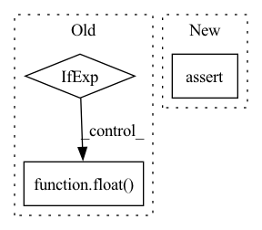

Pattern ID :11010
Before Change
]
num_outputs = (
len(input_lengths) if is_pooled else float( sum(input_lengths) / world_size)
)
output_sizes: List[int] = [
math.ceil(
batch_sizeAfter Change
) -> Tuple[List[int], List[int]]:
num_inputs = sum([x * y for x, y in zip(input_lengths, num_objects)]) / world_size
assert (
num_inputs == sum(input_lengths) / world_size
), f"{num_inputs}, {input_lengths} / {world_size}, num: {num_objects}"
num_outputs = sum(num_objects) if is_pooled else num_inputsIn pattern: SUPERPATTERN
Frequency: 4
Non-data size: 3
Instances Fragment ID: 37927776
Project Name: pytorch/torchrec
Commit Name: c5a46f1ad1734736e9f05708940336413df74f26
Time: 2022-05-12
Author: dstaay@fb.com
File Name: torchrec/distributed/planner/shard_estimators.py
M Class Name: AnonimousClass
N Class Name: AnonimousClass
M Method Name: _calculate_rw_shard_io_sizes(8)
N Method Name: _calculate_rw_shard_io_sizes(7)
M Parent Class:
N Parent Class:
M File Name: torchrec/distributed/planner/shard_estimators.py
N File Name: torchrec/distributed/planner/shard_estimators.py
M Start Line: 823
M End Line: 834
N Start Line: 862
N End Line: 872
Before Change
new_obs, reward, done, _ = env.step(self.max_action * action)
if hasattr(self.env, "_max_episode_steps") and remove_timelimits:
done_bool = 0 if episode_timesteps + 1 == env._max_episode_steps else float( done)
else:
done_bool = float(done)
episode_reward += rewardAfter Change
total_timesteps = []
assert isinstance(env, VecEnv)
assert env.num_envs == 1
for _ in range(n_episodes):
done = False Fragment ID: 37927774
Project Name: dlr-rm/stable-baselines3
Commit Name: 0e727a5f7263b855bb6b8ebcde47f404fc036f36
Time: 2019-09-20
Author: antonin.raffin@dlr.de
File Name: torchy_baselines/common/base_class.py
M Class Name: BaseRLModel
N Class Name: BaseRLModel
M Method Name: collect_rollouts(10)
N Method Name: collect_rollouts(10)
M Parent Class: object
N Parent Class: object
M File Name: torchy_baselines/common/base_class.py
N File Name: torchy_baselines/common/base_class.py
M Start Line: 220
M End Line: 244
N Start Line: 223
N End Line: 251
Before Change
< max(
[
self._f_best[k_metric]
+ self.lexico_objectives["tolerances"][k_metric]
if not isinstance(
self.lexico_objectives["tolerances"][k_metric], str
)
else self._f_best[k_metric]
* (
1
+ 0.01
* float(
self.lexico_objectives["tolerances"][
k_metric
].replace("%", "")
)
),
k_target,
]
)After Change
+ self.lexico_objectives["tolerances"][k_metric]
)
else:
assert (
self.lexico_objectives["tolerances"][k_metric][-1] == "%"
), "String tolerance of {} should use %% as the suffix".format(
k_metric Fragment ID: 37927775
Project Name: microsoft/flaml
Commit Name: 3a68da87742c040bbd1321bf435c57d4ccd3be43
Time: 2023-01-17
Author: shaokunzhang529@gmail.com
File Name: flaml/tune/searcher/flow2.py
M Class Name: FLOW2
N Class Name: FLOW2
M Method Name: lexico_compare(2)
N Method Name: lexico_compare(2)
M Parent Class: Searcher
N Parent Class: Searcher
M File Name: flaml/tune/searcher/flow2.py
N File Name: flaml/tune/searcher/flow2.py
M Start Line: 412
M End Line: 464
N Start Line: 417
N End Line: 450